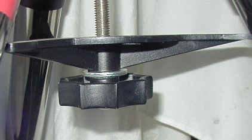

Some Common Questions and Answers for New LX90 Owners
1) Why doesn't the spreader doesn't reach all the tripod
legs when I set up?
2) When I setup, the alignment
stars are a long ways off from where the scope is pointing.
3) When I slew to an object,
it's not centered. When I center it, the scope slews back to
where it was.
4) How do I focus the
finderscope?
5) When I slew to an alignment
star, it's hard to center. How do I slow the slewing speed down?
6) I can't tighten my RA lock
enough to secure the RA axis.
7) Do I need a dewshield or
corrector heater?
8) I get a message on the
AutoStar that says "alignment error, check stars" -
what's that mean?
9) How do I change the speed
of the scrolling text?
10) How often should I clean
the optics? What's the best cleaning solution to use?
11} Do I need a wedge?
12} The image moves around
the EP when I focus, is this normal?
13} Do I need a 2"
diagonal?
14) My scope keeps defaulting
back to ETX90 as a model when I select LX90
15)
1) Why doesn't the spreader doesn't reach all the tripod legs when I set up?
This happens when the spreader isn't centered directly under the tripod head. Before mounting the LX90 on the tripod, lift the tripod with one hand under the spreader (placed in the proper position), until all three legs are off the ground, then set it down and level it. This will ensure the spreader is evenly centered under the tripod head when you attach the LX90.
2) When I setup, the alignment stars are a long ways off from where the scope is pointing.
This is normal. The LX90 has no idea of where it is until you center the alignment stars. Until then, it's using it's "best guess" depending on the location, time, DST and initial home position. Center the alignment stars as closely as possible using the finderscope first, and then more precisely with an EP. [Back to Top]
3) When I slew to an object, it's not centered. When I center it, the scope slews back to where it was.
This is jokingly refered to as "rubberbanding" by ETX and LX90 owners. The fix is to do a reset, motor calibration and re-train the drives. When training the drives, use the highest power EP you have (a reticule EP helps immensely), and reduce your slew speed to 2 or 3. Never reverse motor direction when training, and never overshoot the target when returning. If you do, start the process all over again. On this note, if you make changes to your telescope by adding payloads (weights, cameras, rich field piggybacked scopes, etc), you should re-calibrate your drive motors and check your GoTo's and tracking. If they seem off, a re-training will probably take care of it. [Back to Top]
4) How do I focus the finderscope?
Loosen the black ring behind the finder's objective cell, then rotate the objective cell while checking focus on a bright star. Once you've found focus, tighten up the black locking ring again. You should probably only need to do this once. [Back to Top]
5) When I slew to an alignment star, it takes forever to center. Can I speed the scope up somehow?
After you hear the beep, press the "6" key. The numbered keys will speed up / slow down the slewing speed. I normally use "6" initially to center the star in the finder, then "3" to center it in my reticule EP. What ever speed suits you best is what you should use. [Back to Top]
6) I can't tighten my RA lock enough to secure the RA axis.
Be very carefull if this happens. You can break the RA lock casting inside the base if you try to over tighten the RA lock. First, make sure that the spreader is right side up - the vanes should be facing down and the "flat" side of the spreader towards the telescope. Make sure the spreader is touching all three legs of the tripod, and the tripod is level. Finally, you may need to use 2 or 3 fender washers between the knob and the spreader, effectively "shortening" the main tripod bolt. If this bolt is run up into the scope too far, it interferes with the RA lock bolt - possibly preventing the RA lock from fully compressing against the RA drive gear.

Washers between the spreader and the tripod knob
Over tightening either the RA lock or the tripod bolt under these conditions can stress and break the RA lock casting. See this site for the resulting damage, and here for repair information. [Back to Top]
7) Do I need a dewshield or corrector heater?
Almost everyone does, sooner or later. If you live in an area with very arid, dry conditions you probably can get away without the heater. A dewshield doubles as a lightshield, preventing stary light from getting to your corrector plate, so I'd suggest that everyone use at least a dewshield. Here in the northeast I need both to prevent dew and / or frost from forming on the corrector. A dewshield has the added advantage of blocking stray light from entering your corrector, so it's a good idea to use one all the time. [Back to Top]
8) I get a message on the AutoStar that says " alignment error, check stars", what's that mean?
More than likely, you've centered the wrong star during alignment. Some stars are quite close and easily mistaken in the finder or EP as the correct star - such as Tarazed and Altair, or Castor and Pollux. If the error message is consistent, try using a "two-star" alignment rather than an "easy alignment", and select two stars that are farther apart and near the celestial equator. If you still get the message, you may need to reset, recalibrate and retrain the Autostar, or update the firmware (usually unlikely). [Back to Top]
9) How do I change the speed of the scrolling text?
Use the Up / Down keys at the bottom of the Autostar while the text is scrolling to adjust the speed. [Back to Top]
10) How often should I clean the optics? What's the best solution to use?
The corrector plate and your EP's are coated
with (usually) magnesium flouride to prevent reflections. Clean
your optics only when it's absolutely neccesary. Dust, dew marks
and a few fingerprints won't degrade the performance of your
system, but when they pile up, it's time to clean. If you get sap
droplets off the trees, clean them as soon as possible, as some
sap will degrade the coatings. The use of dewshield will prevent
most sap droplets from hitting your corrector. For my less
expensive EP's, I use a lenspen - a nice little gadget
that has a retractable camel hair brush on one end, and a capped
cleaner on the other. For the corrector and my good EPs, I use
lint-free cloths and a 10 -1 solution of distilled water and
isopropyl alcohol, with one drop of "Ivory liquid" as a
wetting agent per quart of solution. Dust the corrector with a
brush to remove dirt particles first, then clean with the
solution. Dr Clay Sherrod has developed a solution that is less
destructive to the new UHTC coatings (and the standard EMC
coatings), this is available at his website, (www.arksky.org) Use unscented, uncolored alcohol and cleaning pads.
Get the purest alcohol you can find from your local pharmacy.
Never push your cleaning pad against the corrector, use gentle,
light motions and let the solution remove the marks, rather than
brute force.
[Back to Top]
If you intend on doing long exposure astrophotography, yes. Short exposures of wide fields, under a minute using a piggybacked 50mm lens can usually be done without the wedge. Prime focus and afocal photography in Alt/Az is limited to bright objects, such as the moon or bright planets. Any deep sky stellar object, planetary nebula or emmision/reflection nebula will require long exposures and an equatorially mounted scope. Even though I rarely photograph, I use a wedge because I find that tracking is better when properly polar aligned. The bad side is that the scope is less stable mounted on the wedge. People living at lower lattitudes will find the wedge to be even less stable (I'm at 43º North). The use of vibration suppresion pads helps immensely. [Back to Top]
12} The image moves around the EP when I focus, is this normal?
Yes, all SCTs and Maksutovs show some "image shift" when focusing. Since the primary mirror is being moved to achieve focus, the image will move slightly in the FOV. You can rid yourself of some of this by running the mirror up and down the primary baffle a few times (turn the focus knob to both limits of it's travel). This spreads the grease out along the baffle tube. There are other adjustments that can be done by those capable of minor mechanical abilities here. The addition of an aftermarket helical focuser to the visual back also improves fine focus, but limits the altitude/declinations the scope is capable of, since they extend the length of the optical path and may interfere with the base. After using your new scope for a few sesions, you'll gradually become adjusted to the image shift. Also, always finish focusing with a counterclockwise turn on the knob. This prevents the primary from slipping back slightly due to gravity (especially in warm weather and while viewing near the zenith). [Back to Top]
Probably not. Unless you're considering buying some of the newer, pricier 2" eyepieces, or would like to test some of them at star parties, no. A 2" diagonal isn't going to give you a much wider field of view. However, there are some very good 2" mirror diagonals that may be an improvement to your stock prism diagonal, Meade's new UHTC coated diagonal included. The stock prism diagonal isn't a high precision item, and has been known to have flaws and misalignments. Best bet - check your prism with a known, good 2" mirror diagonal before you decide to purchase. If you question your diagonal's light loss and contrast, compare the view without it (EP directly in the visual back) to the view with it in the optical path.
For wide field views, a .63 focal reducer or
(better yet) a piggybacked wide field scope are good
alternatives. The ST80, Stellarvue, Brandon and Televue scopes
are all good alternatives for piggybacking, depending on your
price range and mechanical/optical quality needs. If you do
decide on a 2" mirror diagonal, be aware that some of them
will limit your scope's ability to be used near the zenith. Also,
2" diagonals usually come with a 1.25" adapter for your
regular EP's. My reasoning for buying a 2" diagonal was the
slightly better contrast and lower light loss, the ability to use
2" EP's, and a higher quality of construction and strength.
[Back to Top]
14) My scope keeps defaulting back to ETX90 as a model when I select LX90
The selected model will always have the "greater than" or right arrow ( > ) next to the selected model. When you scroll down through the telescope models, make sure you hit enter to actually "select" the model you've scrolled to. This applies to all other menus with selectable parameters as well, such as Polar or Alt/Az mode. Once you have the defaults selected properly, you shouldn't need to bother with them again, but if you're having problems it's always a good idea to check them, and/or reselect them from the menu. [Back to Top]
Have a question, or feel a
question/answer should be posted here? Drop me an e-mail
If you have a question not covered, feel free to ask it on the LX90
users Group
| Back to Contents || Wedge adapter || Focuser || Azimuth
adjuster || Weight Set || Dovetail ||
|| Compass || Polar || Pinouts || Tours/Ephemerides || Declination || Q and A ||
{kind=link}